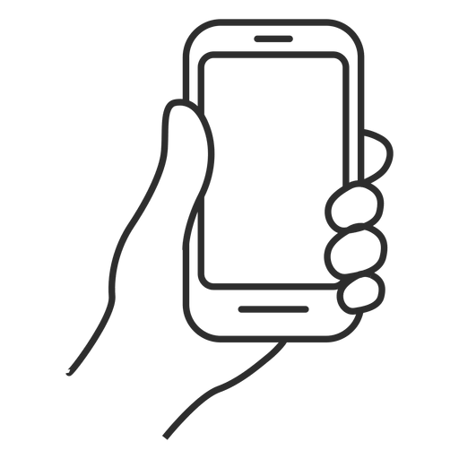
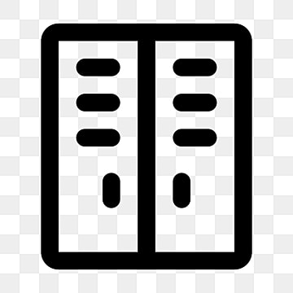
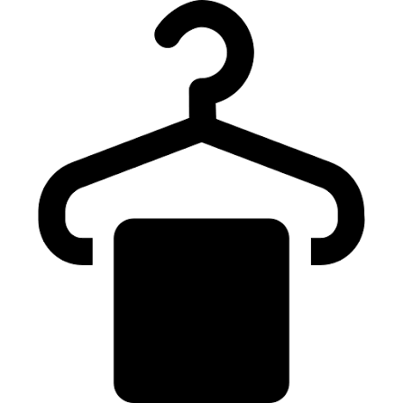
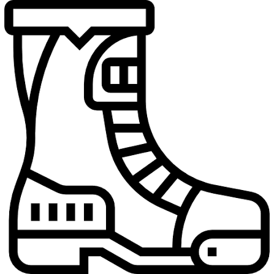

Más fácil, más cómodo, ¡sube directo a pistas!

Gana tiempo de esquí, reserva tu material desde casa y recógelo a la llegada a la estación, ¡a pie de pistas!

Contamos con Guarda-Esquís para que te olvides de subir y bajar tu material de casa.

En la cabaña del alquiler dispones de un espacio cómodo y privado para cambiarte de ropa.

Disponemos de servicio de secabotas para que al día siguiente las utilices como el primer día.
Formulario de Alquiler de Material y Forfait
Rellena tus datos para tener listo tu equipo a tu llegada a la Estación Gros.